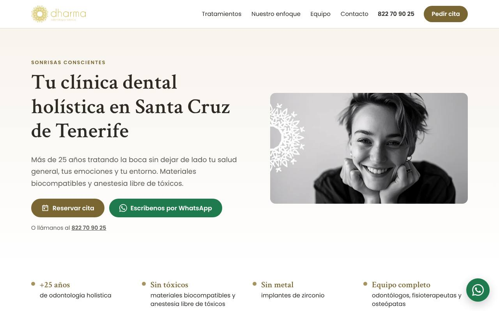
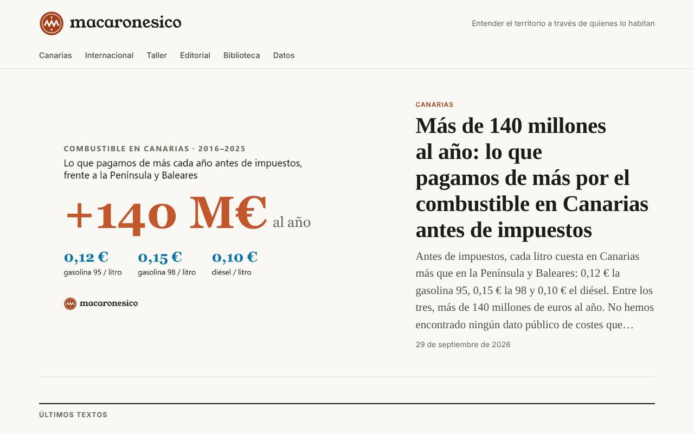
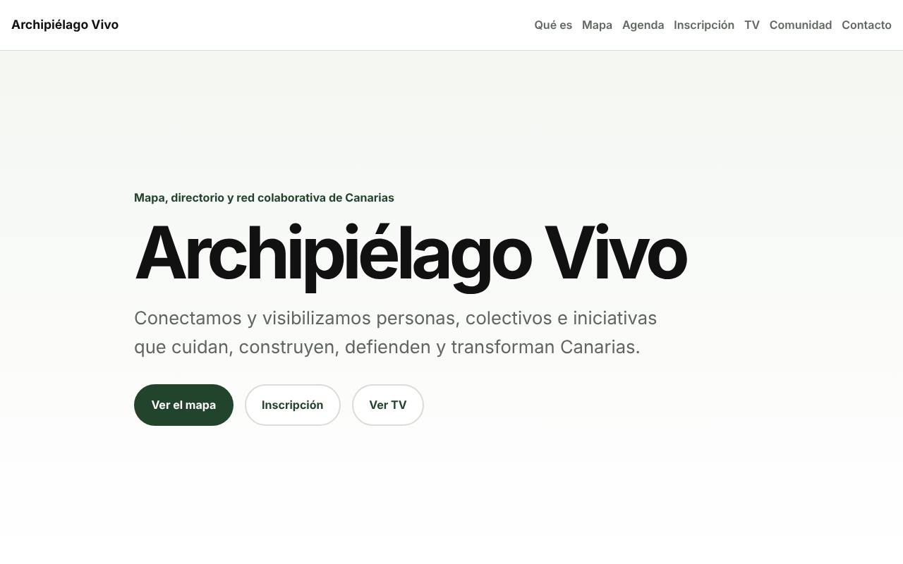
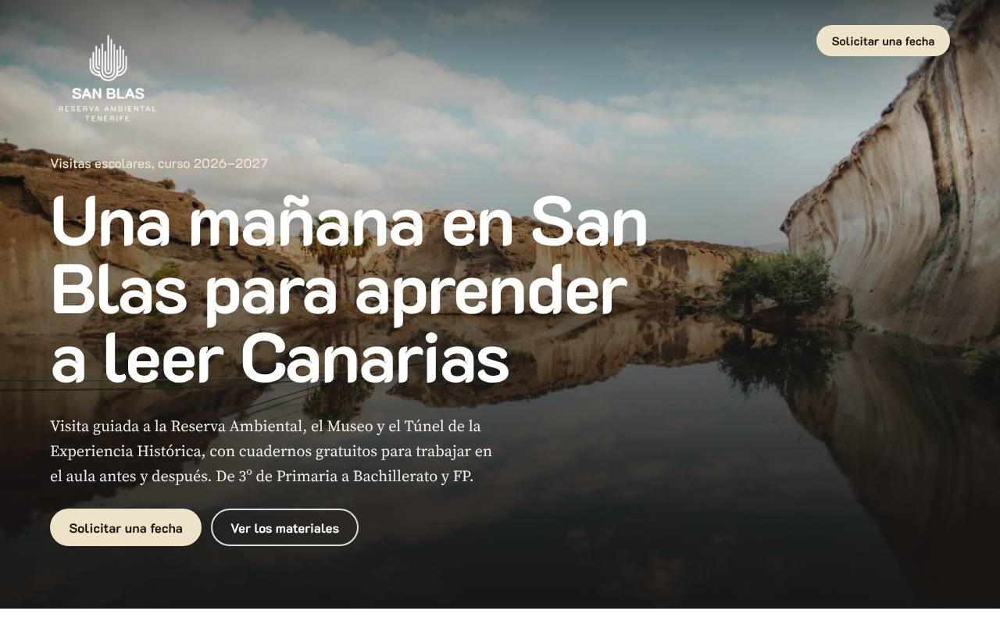
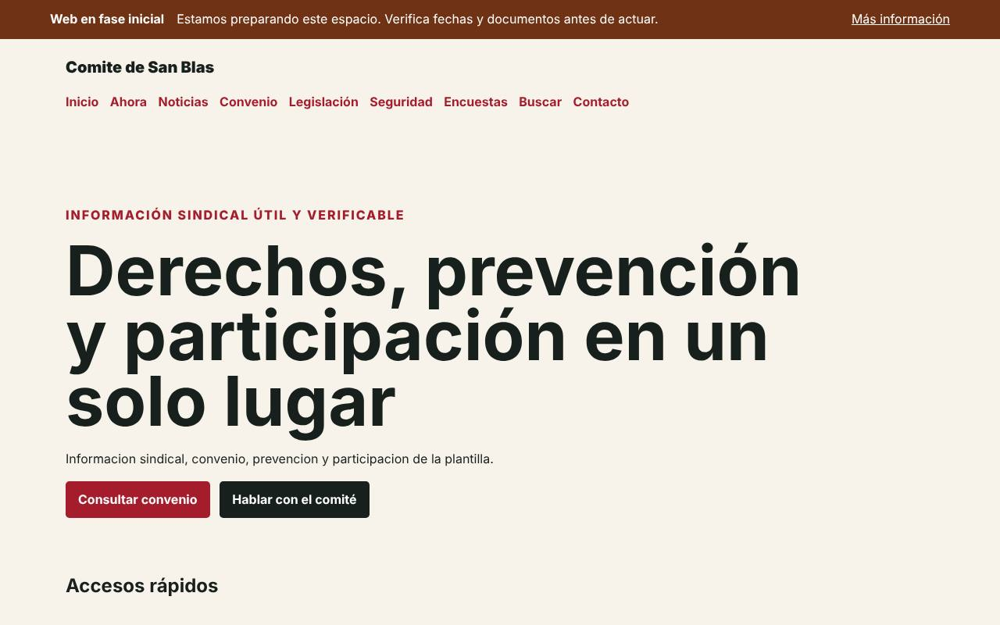
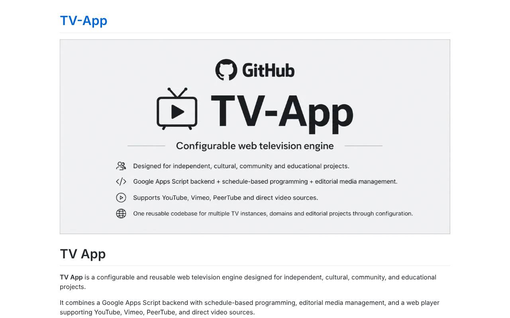

Kunde · Web-Optimierung
Clínica Dental Dharma
Problem Eine schwerfällige WordPress-Website mit hohen Hosting-Kosten.
Idee Sie auf eine schlanke Website umziehen und ihre Ressourcen optimieren.
Konzept Statische Website, schneller und günstiger zu hosten. Dem Kunden übergeben, noch nicht veröffentlicht.
Projekt ansehen (öffnet in einem neuen Tab) ↗
Kunde · Wohlbefinden
Mi Terapia Regresiva
Problem Eine wenig bekannte Therapie, schwer zu erklären, und der erste Schritt fällt schwer.
Idee Sie mit Artikeln und Antworten auf häufige Fragen erklären.
Konzept Website mit Artikeln, häufigen Fragen und direktem Kontakt über WhatsApp.
Projekt ansehen (öffnet in einem neuen Tab) ↗
Kultur · Kulturerbe
Canarias.africa
Problem Kunst und Kultur der Kanaren, verstreut und ohne gemeinsamen Ort.
Idee Ein Museum ohne Gebäude, von allen gemeinsam gebaut.
Konzept Der Atlantische Katalog von Núnea Arqueología, offen und gemeinschaftlich.
Projekt ansehen (öffnet in einem neuen Tab) ↗

Redaktion · Region
Macaronesico
Problem Die Region verstehen, ohne bei Schlagzeilen stehen zu bleiben.
Idee Ein offenes Labor, das Daten und Stimmen der Menschen vor Ort zusammenführt.
Konzept Analysen, Meinungen und Daten zu den Kanaren und Makaronesien.
Projekt ansehen (öffnet in einem neuen Tab) ↗

Gemeinschaft · Gemeinsame Karte
Archipiélago Vivo
Problem Menschen und Initiativen, die sich um die Kanaren kümmern, sich aber nicht finden.
Idee Ein gemeinsames Netz, das sie auf die Karte bringt.
Konzept Karte, Kalender und Netz, das Menschen, Gruppen und Initiativen verbindet.
Projekt ansehen (öffnet in einem neuen Tab) ↗

San Blas Reserva Ambiental · Bildung
Dossier für Schulbesuche
Problem Lehrkräfte müssen einen Schulbesuch mit allen Informationen zur Hand planen können.
Idee Ein klares Web-Dossier für alle, die den Ausflug organisieren.
Konzept Besuch des Reservats, des Museums und des Tunnels der historischen Erfahrung, mit Heften nach Stufen und Terminanfrage.
Projekt ansehen (öffnet in einem neuen Tab) ↗
San Blas Reserva Ambiental · Führer
Führer und Materialien
Problem Besucher müssen Pflanzen, Vögel und Bestäuber am Weg erkennen können.
Idee Druckbare Materialien, um den Besuch vorzubereiten, zu erleben und in Erinnerung zu behalten.
Konzept Feldführer, Karte, Lernhefte, Schulwettbewerb und die Galerie „Cien años después“ (Hundert Jahre später).
Projekt ansehen (öffnet in einem neuen Tab) ↗
San Blas Reserva Ambiental · Email marketing
E-Mail-Kampagnen
Problem Hotels, Schulen und Agenturen mit einer jeweils passenden Botschaft erreichen.
Idee Eigene E-Mail-Kampagnen für jede Zielgruppe und Saison.
Konzept E-Mail-Vorlagen mit Fotos, Video und Symbolen des Reservats, nach Zielgruppe, Jahr und Kampagne geordnet.
Kundenauftrag

Plattform · Open Source
Sindical Federado
Problem Betriebsräte und Gewerkschaftsgruppen ohne eigene, einfache und günstige Website.
Idee Ein statisches System, das jede Gruppe selbst einrichtet und mit den anderen verbindet.
Konzept Open-Source-Plattform mit Tarifvertrag, Arbeitsschutz und Beteiligung.
Projekt ansehen (öffnet in einem neuen Tab) ↗

Plattform · Open Source
TV-App
Problem Einen eigenen Sender ohne Fernsehinfrastruktur betreiben.
Idee Videos bestehender Plattformen nach Sendeplan programmieren.
Konzept Web-TV-Engine mit YouTube, Vimeo und PeerTube.
Projekt ansehen (öffnet in einem neuen Tab) ↗
Werkzeug · Gemeinschaft
Open Play Network
Problem Unklare oder wenig neutrale Meldungen in der Steam-Community.
Idee Geführte Vorlagen, um sie gut zu formulieren.
Konzept Ein Kit, um klare, neutrale Meldungen auszuwählen, zu prüfen und zu kopieren.
Projekt ansehen (öffnet in einem neuen Tab) ↗
Offene Werkzeuge · Digitale Sicherheit
Diez Claves
Problem Digitale Sicherheit wird mit Fachjargon und Angst erklärt und kaum je für Spanischsprachige.
Idee Sie in einfachem Spanisch erklären, immer in zehn Schlüsseln, mit Werkzeugen, die nichts an niemanden senden.
Konzept 95 Anleitungen in 9 Themen und ein Passwortgenerator mit ñ und Akzenten, der im Browser läuft, ohne Cookies und mit offenem Code.
Projekt ansehen (öffnet in einem neuen Tab) ↗